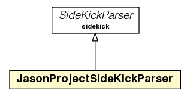

jason.jeditplugin
Class JasonProjectSideKickParser

java.lang.Object
 sidekick.SideKickParser
jason.jeditplugin.JasonProjectSideKickParser
sidekick.SideKickParser
jason.jeditplugin.JasonProjectSideKickParser
public class JasonProjectSideKickParser
- extends sidekick.SideKickParser
|
Field Summary |
static java.lang.String |
ID
|
| Fields inherited from class sidekick.SideKickParser |
SERVICE |
|
Method Summary |
static void |
addError(jason.mas2j.parser.ParseException ex,
errorlist.DefaultErrorSource errorSource,
java.lang.String path)
|
static void |
addPluginInstance(JasonID p)
|
sidekick.SideKickParsedData |
parse(org.gjt.sp.jedit.Buffer buf,
errorlist.DefaultErrorSource errorSource)
|
java.lang.String |
toString()
|
| Methods inherited from class sidekick.SideKickParser |
activate, activate, canCompleteAnywhere, canHandleBackspace, complete, deactivate, deactivate, getInstantCompletionTriggers, getName, getParseTriggers, stop, supportsCompletion |
| Methods inherited from class java.lang.Object |
clone, equals, finalize, getClass, hashCode, notify, notifyAll, wait, wait, wait |
ID
public static final java.lang.String ID
- See Also:
- Constant Field Values
JasonProjectSideKickParser
public JasonProjectSideKickParser()
addPluginInstance
public static void addPluginInstance(JasonID p)
parse
public sidekick.SideKickParsedData parse(org.gjt.sp.jedit.Buffer buf,
errorlist.DefaultErrorSource errorSource)
- Specified by:
parse in class sidekick.SideKickParser
addError
public static void addError(jason.mas2j.parser.ParseException ex,
errorlist.DefaultErrorSource errorSource,
java.lang.String path)
toString
public java.lang.String toString()
- Overrides:
toString in class java.lang.Object